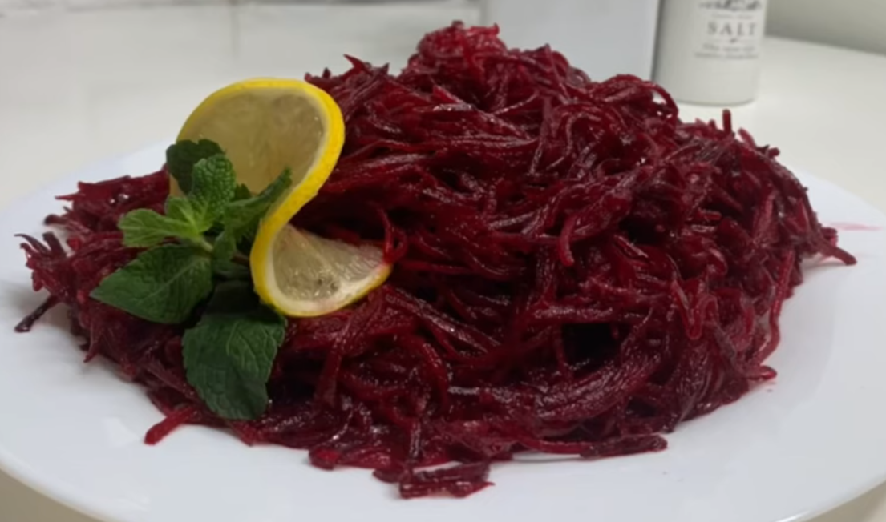
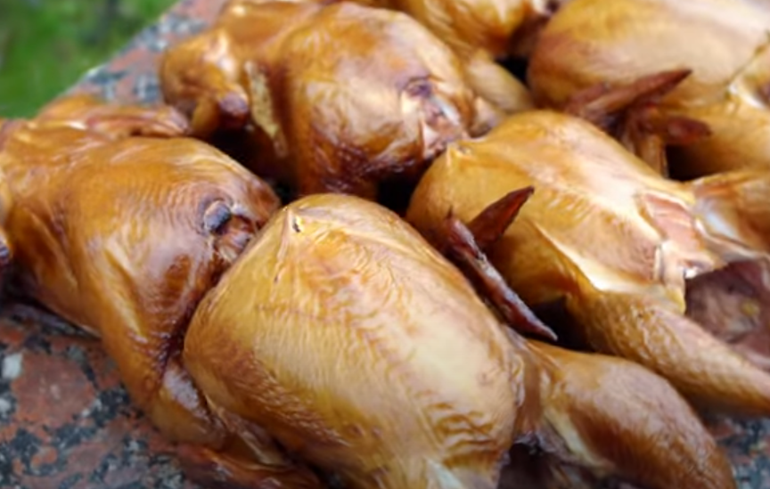
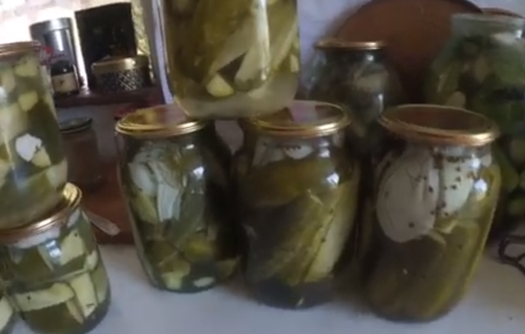
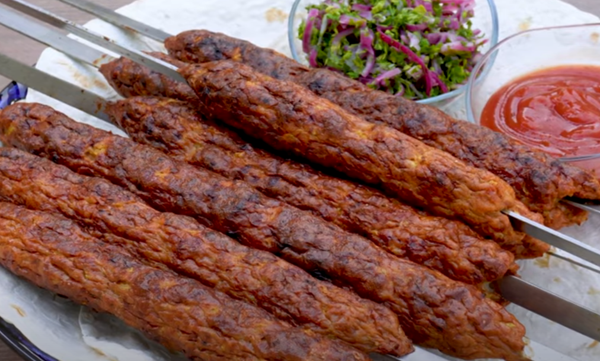

Рецепти з коріандру
Повернутися назад

Буряк по-корейськи
Морква по-корейськи

Копчена курка

Мариновані огірки з коріандром і кмином
Тушкована картопля з м'ясом
Капустка тушена
Цибуляники

Кебаб свинина